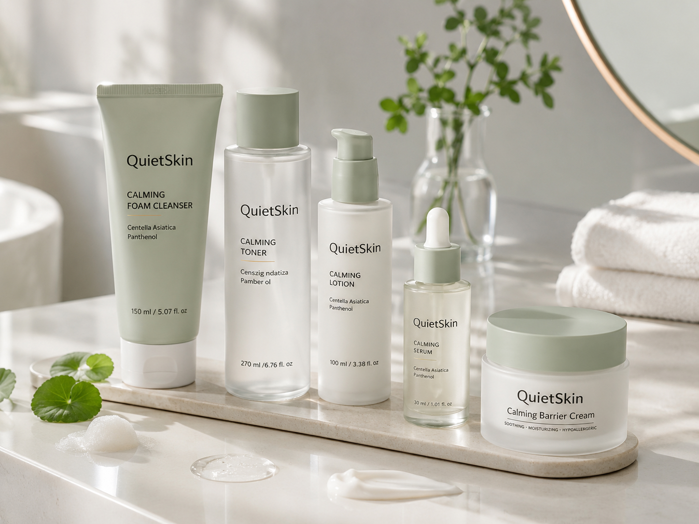
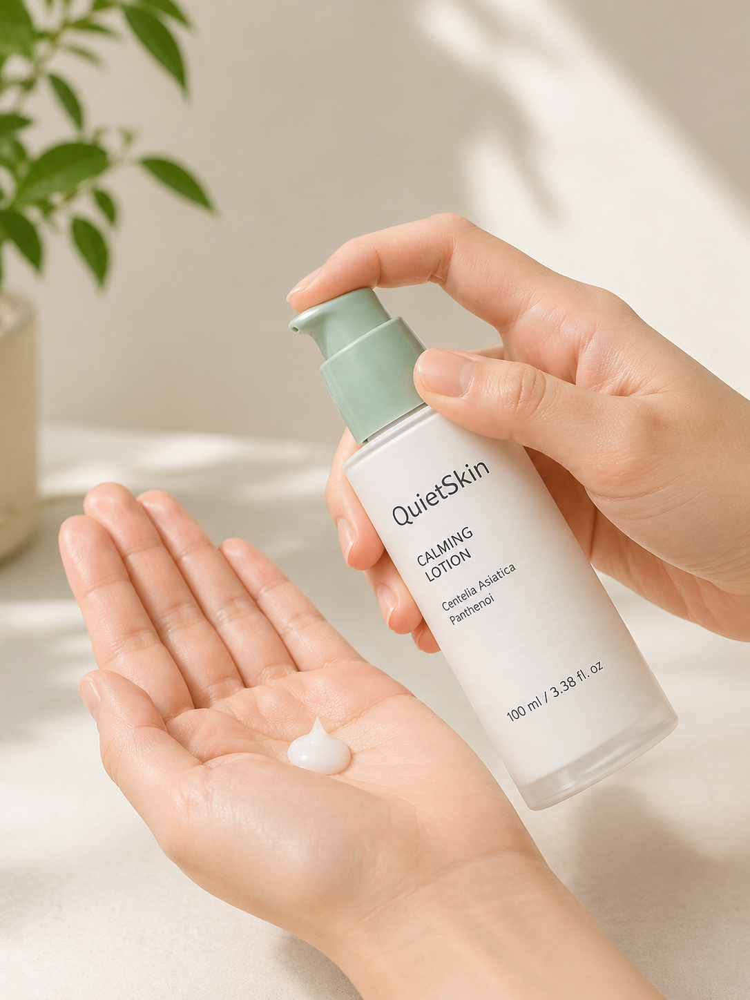
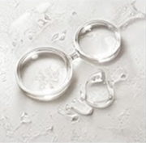
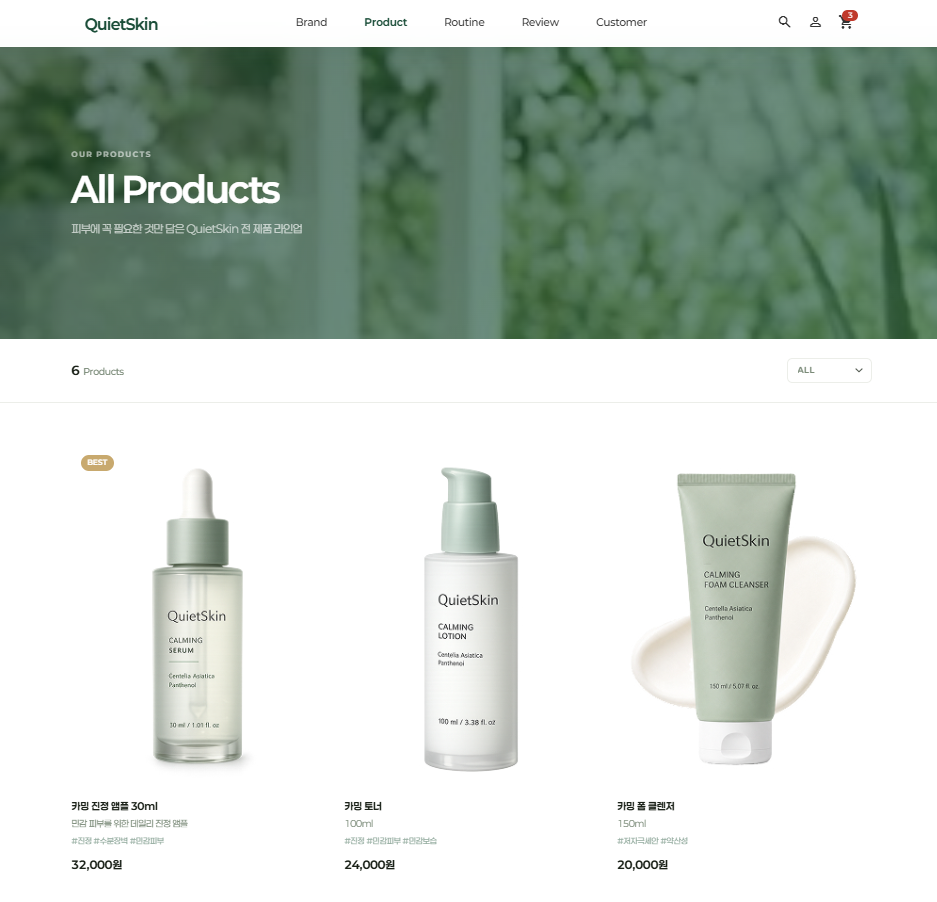
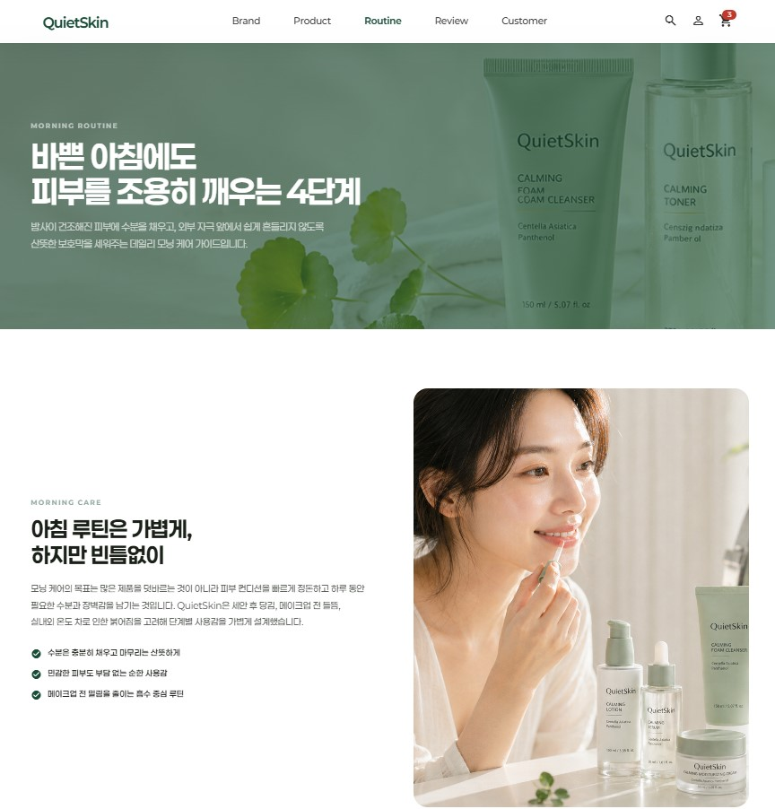
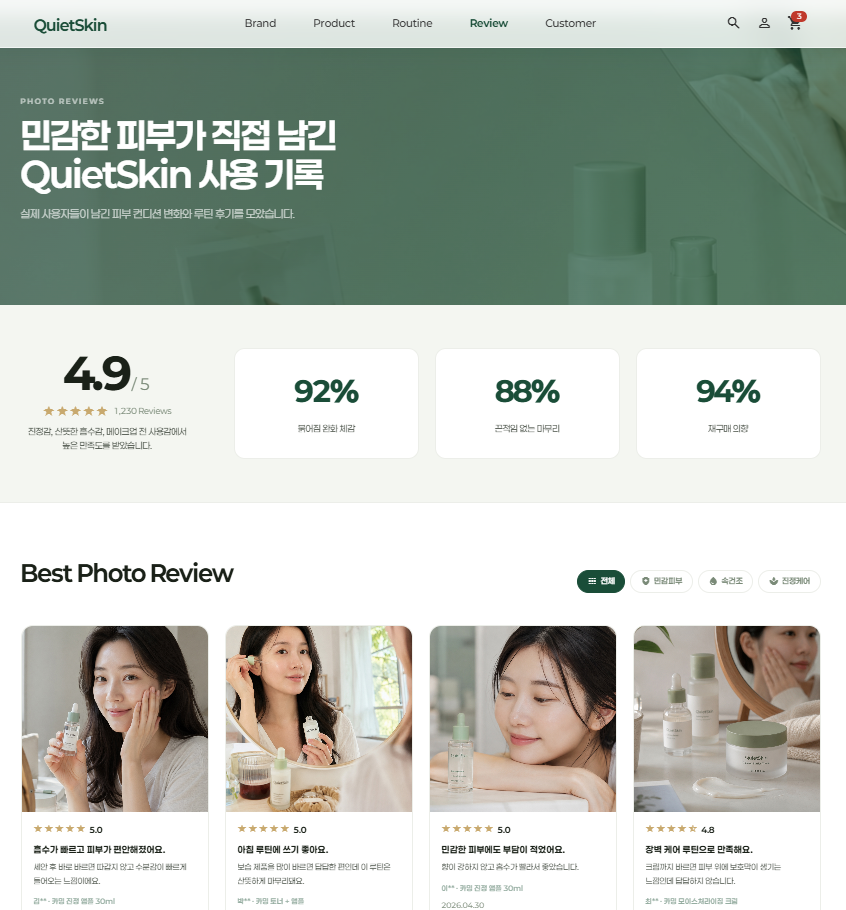

30–40대, 피부 변화를 느끼기 시작한 사람
- 건조함과 탄력 저하를 조금씩 체감하고 있음
- 강한 안티에이징 성분 제품이 피부에 부담스러움
- 복잡한 다단계 루틴보다 간결하고 꾸준한 관리를 원함
- 빠른 변화보다 피부 상태를 오래 유지하는 것을 중시함
피부의 시간을 천천히
빠르게 바꾸는 피부가 아닌,
매일의 조용한 관리로 피부를 오래 유지하는
슬로우 에이징 스킨케어 브랜드.
배경
안티에이징 시장이 즉각적인 효과를 강조하는 방향으로 과열되면서, 오히려 매일 꾸준히 피부를 관리하는 '지속 가능한 케어'의 관점이 주목받기 시작했습니다.
기획 방향
피부 장벽 보호와 스킨 롱제비티 개념을 중심으로, 브랜드 포지셔닝·제품 루틴·콘텐츠 전략·웹 경험을 하나의 방향으로 설계했습니다.
결과물
브랜드 전략 문서, 제품 루틴 구조, 콘텐츠 캠페인 기획, 웹사이트 디자인 및 라이브 배포까지 하나의 프로젝트로 완성했습니다.
Market Trend
빠른 효과를 앞세운 안티에이징 시장에서 소비자들은 피로감을 느끼기 시작했습니다. QuietSkin은 그 반대편의 관점에서 출발합니다.
강한 성분과 극적인 변화를 강조하는 제품들이 오히려 피부 장벽을 무너뜨리면서, 순한 관리를 원하는 수요가 빠르게 늘고 있습니다.
문제가 생긴 뒤 고치는 방식보다, 피부 장벽을 일상적으로 보호하고 노화를 늦추는 예방적 관리로 관점이 이동하고 있습니다.
스키니멀리즘 트렌드 속에서 복잡한 단계 없이 매일 지속 가능한 루틴을 원하는 사용자가 늘고 있습니다.
제품 성분만으로는 차별화가 어려운 시대, 브랜드가 어떤 철학으로 피부를 바라보는지가 선택의 기준이 되고 있습니다.
매일의 조용한 관리로 피부의 시간을 천천히
슬로우 에이징
스킨케어 브랜드
오래 유지되는 피부,
매일 쓰고 싶은 루틴
Brand Values
Target Audience
Product Strategy
자극을 줄이고 피부 장벽을 지키는 방향으로 구성된 간결한 4단계 루틴입니다.
민감해진 피부를 진정시키는 단계
Quiet Cleansing Gel수분과 유분 균형을 맞추는 단계
Balance Essence Toner피부 장벽을 보호하고 수분 손실을 줄이는 단계
Barrier Recovery Serum컨디션과 탄력을 안정적으로 유지하는 단계
Slow Aging Cream

Visual Direction
Color Palette
Visual Keywords
자연광이 드는 조용한 공간, 피부 결이 자연스러운 모델, 물·유리·천·식물 같은 부드러운 소재. 극적인 전후 비교, 강한 메디컬 이미지, 즉각적인 리프팅 표현은 배제했습니다.


Key Ingredients



Website Design
브랜드의 철학을 먼저 이해하고, 자신의 피부 상태에 맞는 루틴을 선택하는 흐름으로 설계했습니다.





User Review


Retrospective
QuietSkin은 처음부터 슬로우 에이징을 브랜드 핵심으로 설정하고, 그 철학이 제품 구성·콘텐츠·웹 경험 전반에 일관되게 흐르도록 설계했습니다. 빠른 효과를 강조하는 시장에서 반대 방향을 명확히 선택하는 것이 이 브랜드의 출발점이었습니다.
브랜드 전략, 콘텐츠, UI/UX는 각각의 작업이 아니라 하나의 사용자 경험으로 연결되어야 한다는 것을 이 프로젝트에서 직접 구현했습니다.